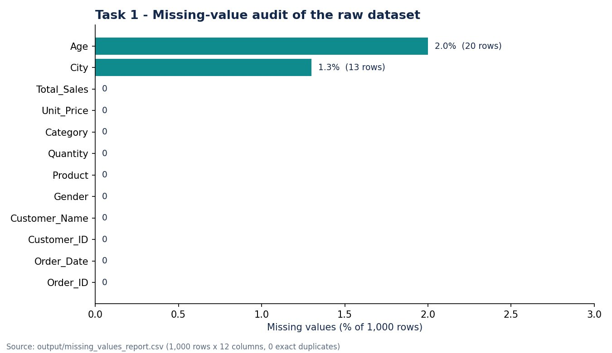
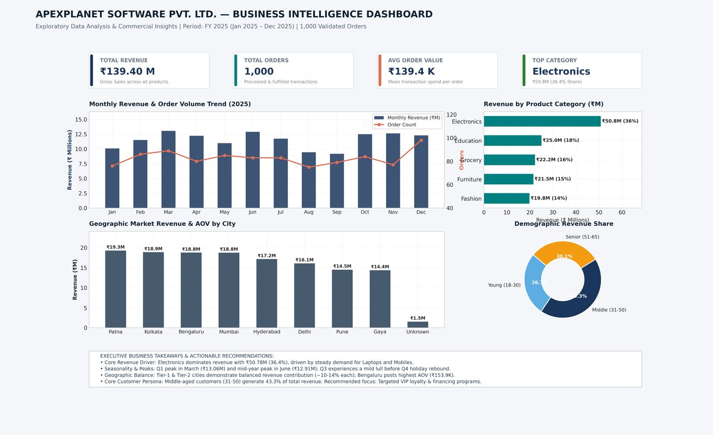
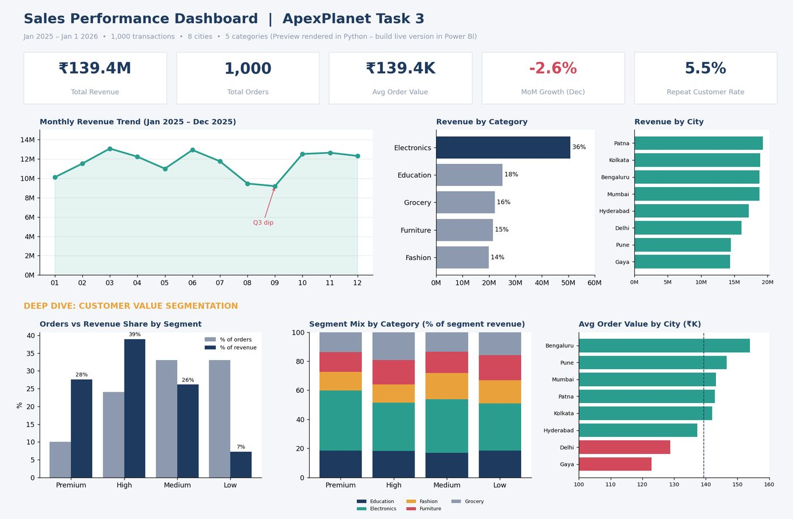
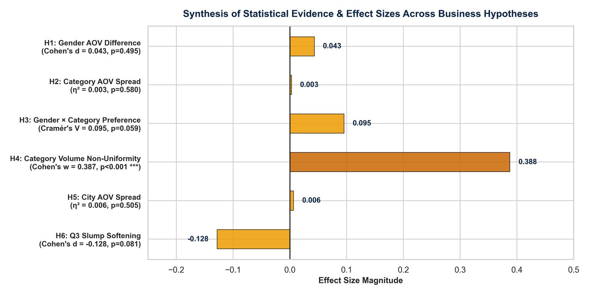

Task 1
Data Cleaning and Preprocessing
Audited a 1,000-row retail sales file, reported missing values and duplicates, standardised the schema and exported a cleaned dataset with a script anyone can re-run.
Four internship projects, each with its own GitHub repository.

Task 1
Audited a 1,000-row retail sales file, reported missing values and duplicates, standardised the schema and exported a cleaned dataset with a script anyone can re-run.

Task 2
Cleaned the sales data, loaded it into SQLite, answered seven business questions with SQL and summarised the results in charts and a static dashboard mock-up.

Task 3
Defined five core KPIs, segmented orders by value tier and prepared a two-page Power BI dashboard design with DAX measures, a custom theme and a build guide.

Task 4
Tested six business hypotheses with Welch t-tests, ANOVA and chi-square tests, reported p-values, confidence intervals and effect sizes, and presented the story in a 17-slide deck.
Task 1
Inspect a raw sales dataset, measure its quality problems and produce a clean, reproducible file for the later tasks.
1,000 rows and 12 columns: Order_ID, Order_Date, Customer_ID, Customer_Name, Age, Gender, City, Product, Category, Quantity, Unit_Price, Total_Sales.
Data-quality audit and cleaning only; no modelling at this stage.
Python, pandas, NumPy, CSV
Task 2
Explore the sales data end to end and answer core commercial questions: what sells, where, when and to whom.
1,000 transactions from 1 January 2025 to 1 January 2026 across 8 cities, 5 categories and 6 products.
Category, monthly, city, demographic, top-customer, product and order-size-tier analysis in SQL, plus correlation analysis in Python.
Python, pandas, Matplotlib, Seaborn, SQL (SQLite), Jupyter
Task 3
Answer which order-value segments, products, cities and age groups drive revenue and where the biggest growth opportunity lies.
The cleaned 1,000-transaction sales dataset, enriched with value segment, age group, month and data-quality flags.
Value-segment, category, city and month analysis, with data caveats documented (repeated Order_ID, missing City and Age, a partial final month).
Power BI, DAX, Python, Excel
Task 4
Check whether patterns seen in Tasks 1 to 3 are statistically reliable, then turn the results into recommendations for decision makers.
The same 1,000-transaction sales dataset (987 to 1,000 rows used per test, depending on missing values).
Gender, category, city and quarter comparisons of order value and order volume.
Python, SciPy, statsmodels, Jupyter, PowerPoint